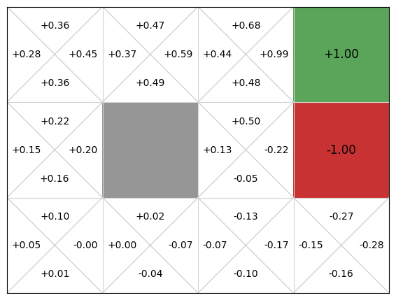
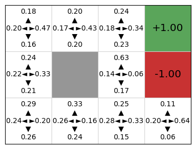

Actor-critic methods#
Learning outcomes
The learning outcomes of this chapter are:
Apply actor-critic methods to solve small-scale MDP problems manually and program actor critic algorithms to solve medium-scale MDP problems automatically.
Compare and contrast actor-critic methods with policy gradient methods like REINFORCE and value-based reinforcement learning.
The sample efficiency problem in REINFORCE leads to issues with policy convergence. As with Monte-Carlo simulation, the high variance in the cumulative rewards \(G\) over episodes leads to instability.
Actor critic methods aim to mitigate this problem. The idea is that instead of learning a value function or a policy, we learn both. The policy is called the actor and the value function is called the critic. The primary idea is that the actor produces actions, and as in temporal difference learning, the value function (the critic) provides feedback or “criticism” about these actions as a way of bootstrapping.
![An abstract illustration of an actor critic algorithm. There are four boxes: environment, sample action, update actor, and update critic. From sample action to update actor is an arrow labelled with the letter a-prime, representing the action that will be executed by the agent in the environment. The update actor uses a-prime to update the policy; that is, the actor. From update actor to update critic is an arrow labelled lower-case delta, representing the amount to update the critic. From the critic to the environment is the action a-prime again. From the environment to update Q-function box are two arrows labelled with r and s-prime respectively, indicating the agent receiving the reward r and observing the new state s-prime.](../_images/actor_critic_loop.png)
Fig. 13 An abstraction illustration of the actor-critic framework.#
Fig. 13 gives an abstract overview of actor-critic frameworks — in this case, Q actor-critic. As with REINFORCE, actions are samples from the stochastic policy \(\pi_{\theta}\). Given the next action, we update the actor (the policy) and then the critic (the value function or Q function). The selected action is executed in the environment, and the agent receives the reward and next state observation.
Q Actor-Critic#
The Q Actor Critic algorithm uses a Q-function as the critic.
Algorithm 13 (Q Actor Critic)
\( \begin{array}{l} \alginput:\ \text{MDP}\ M = \langle S, s_0, A, P_a(s' \mid s), r(s,a,s')\rangle\\ \alginput:\ \text{A differentiable actor policy}\ \pi_{\theta}(s,a)\\ \alginput:\ \text{A differentiable critic Q-function}\ Q_w(s,a)\\ \algoutput:\ \text{Policy}\ \pi_{\theta}(s,a) \\[2mm] \text{Initialise actor}\ \pi\ \text{parameters}\ \theta\ \text{and critic parameters}\ w\ \text{arbitrarily}\\[2mm] \algrepeat\ \text{(for each episode}\ e\ \text{)}\\ \quad\quad s \leftarrow\ \text{the first state in episode}\ e\\ \quad\quad \text{Select action}\ a \sim \pi_\theta(s, a)\\ \quad\quad \algrepeat\ \text{(for each step in episode e)}\\ \quad\quad\quad\quad \text{Execute action}\ a\ \text{in state}\ s\\ \quad\quad\quad\quad \text{Observe reward}\ r\ \text{and new state}\ s'\\ \quad\quad\quad\quad \text{Select action}\ a' \sim \pi_\theta(s', a')\\ \quad\quad\quad\quad \delta \leftarrow r + \gamma \cdot Q_w(s',a') - Q_w(s,a)\\ \quad\quad\quad\quad w \leftarrow w + \alpha_w \cdot \delta \cdot \nabla Q_w(s,a)\\ \quad\quad\quad\quad \theta \leftarrow \theta + \alpha_{\theta} \cdot \delta \cdot \nabla \textrm{ln}\ \pi_{\theta}(s,a)\\ \quad\quad\quad\quad s \leftarrow s'; a \leftarrow a'\\ \quad\quad \alguntil\ s\ \text{is the last state of episode}\ e\ \text{(a terminal state)}\\ \alguntil\ \pi_{\theta}\ \text{converges} \end{array} \)
Note that we have two different learning rates \(\alpha_w\) and \(\alpha_{\theta}\) for the Q-function and policy respectively.
Let’s analyse the key parts in more detail. The line that updates \(\delta\) is the same as the \(\delta\) calculation in SARSA: it is temporal difference value for executing action \(a\) in state \(s\), with the estimate of the future discount reward being \(Q_w(s',a')\).
Once the \(\delta\) value is calculated, we update both the actor and the critic. The weights of the critic \(Q_w\) are updated by following the gradient \(\nabla Q_w(s,a)\) of the critic Q-function at \(s,a\), and then the parameters of the actor \(\theta\) are updated the same way as in REINFORCE, except that the value of \(\delta\) uses the temporal difference estimate based on \(Q_w(s,a)\) instead of using \(G\).
So, this simultaneously learns the policy (actor) \(\pi_{\theta}\) and a critic (Q-function) \(Q_w\), but the critic is learnt only to provide the temporal difference update, not to extract the policy.
But wait! Didn’t we say early that the weakness of value-based methods was that they could not extend to continuous action spaces? Haven’t we now gone backwards by including a Q-function? Why not just use the Q-function directly?
The reason the actor critic methods still work like this is because the actor policy \(\pi_{\theta}\) selects actions for us, while the critic \(Q_w(s,a)\) is only ever used to calculate the temporal difference estimate for an already selected action. We do not have to iterate over the critic Q-function to select actions, so we do not have to iterate over the set of actions – we just use the policy. As such, this will still extend to continuous and large state spaces and be more efficient for large action space.
Implementation#
To implement the Q Actor Critic framework, we first create a new base class called ActorCritic, which can be used as a base for other types of actor critic methods, such as advantage actor critics, which we will not discuss here.
The ActorCritic class is an abstract class that looks similar to that of QLearning, except that we update both the actor and the critic:
from itertools import count
from abc import ABC, abstractmethod
from mastering_rl.learners.model_free_learner import ModelFreeLearner
class ActorCritic(ModelFreeLearner):
def __init__(self, mdp, actor, critic):
self.mdp = mdp
self.actor = actor # Actor (policy based) to select actions
self.critic = critic # Critic (value based) to evaluate actions
def execute(self, episodes=100, max_episode_length=float("inf")):
episode_rewards = []
for episode in range(episodes):
state = self.mdp.get_initial_state()
action = self.actor.select_action(state, self.mdp.get_actions(state))
episode_reward = 0.0
for step in count():
(next_state, reward, done) = self.mdp.execute(state, action)
next_action = self.actor.select_action(
next_state, self.mdp.get_actions(next_state)
)
delta = self.get_delta(
reward, state, action, next_state, next_action, done
)
# Update both models immediately using the current transition.
self.update_critic([state], [action], [delta])
self.update_actor(
[state], [action], [delta], action_spaces=[self.mdp.get_actions(state)]
)
state = next_state
action = next_action
episode_reward += reward * (self.mdp.get_discount_factor() ** step)
if done or step == max_episode_length - 1:
break
episode_rewards.append(episode_reward)
return episode_rewards
def calculate_deltas(self, states, actions, rewards):
G = []
G_t = 0
for r in reversed(rewards):
G_t = r + self.mdp.get_discount_factor() * G_t
G.insert(0, G_t)
values = [
self.state_value(state, action) for state, action in zip(states, actions)
]
deltas = [reward - value for reward, value in zip(G, values)]
return deltas
def get_delta(self, reward, state, action, next_state, next_action, done):
q_value = self.state_value(state, action)
next_state_value = self.state_value(next_state, next_action)
delta = (
reward
+ (self.mdp.get_discount_factor() * next_state_value * (1 - done))
- q_value
)
return delta
@abstractmethod
def update_actor(self, states, actions, deltas, action_spaces=None):
pass
@abstractmethod
def update_critic(self, states, actions, deltas):
pass
@abstractmethod
def state_value(self, state, action):
pass
Note from the code above that we use the actor (the policy) to choose an action, and then update both the critic and the actor. In this particular implementation, we batch update the actor policy at the end of the episode.
Next, we have to instantiate the ActorCritic class as a QActorCritic class to implement the update_actor and update_critic classes:
from mastering_rl.learners.actor_critic import ActorCritic
class QActorCritic(ActorCritic):
def __init__(self, mdp, actor, critic):
super().__init__(mdp, actor, critic)
def update_actor(self, states, actions, deltas, action_spaces=None):
self.actor.update(states, actions, deltas, action_spaces=action_spaces)
def update_critic(self, states, actions, deltas):
self.critic.batch_update(states, actions, deltas)
def state_value(self, state, action):
return self.critic.get_q_value(state, action)
Now, we can create a policy and Q-function using any differentiable policy and any Q-function implementation. We choose DeepNeuralNetworkPolicy and DeepQFunction with QLearning updates.
from mastering_rl.learners.q_actor_critic import QActorCritic
from mastering_rl.markov_decision_processes.gridworld import GridWorld
from mastering_rl.policies.deep_nn_policy import DeepNeuralNetworkPolicy
from mastering_rl.qfunctions.deep_q_function import DeepQFunction
mdp = GridWorld()
action_space = len(mdp.get_actions())
state_space = len(mdp.get_initial_state())
# Instantiate the actor
actor = DeepNeuralNetworkPolicy(state_space, action_space)
# Instantiate the critic
critic = DeepQFunction(state_space, action_space)
# Instantiate the actor critic agent
learner = QActorCritic(mdp, actor, critic)
episode_rewards = learner.execute(episodes=500)
mdp.visualise_q_function(critic)
mdp.visualise_stochastic_policy(actor)


We can see that the actor critic agent has learnt both a policy that is quite good, but also a Q-function critic that could be used as a policy (because our action space is finite and very small). In a continuous state space, we would be able to learn the critic, but not use it as a policy because we cannot iterate over the possible actions.
Takeaways#
Takeaways
Like REINFORCE, actor-critic methods are policy-gradient based, so directly learn a policy instead of first learning a value function or Q-function.
Actor-critic methods also learn a value function or Q-function to reduce the variance in the cumulative rewards.